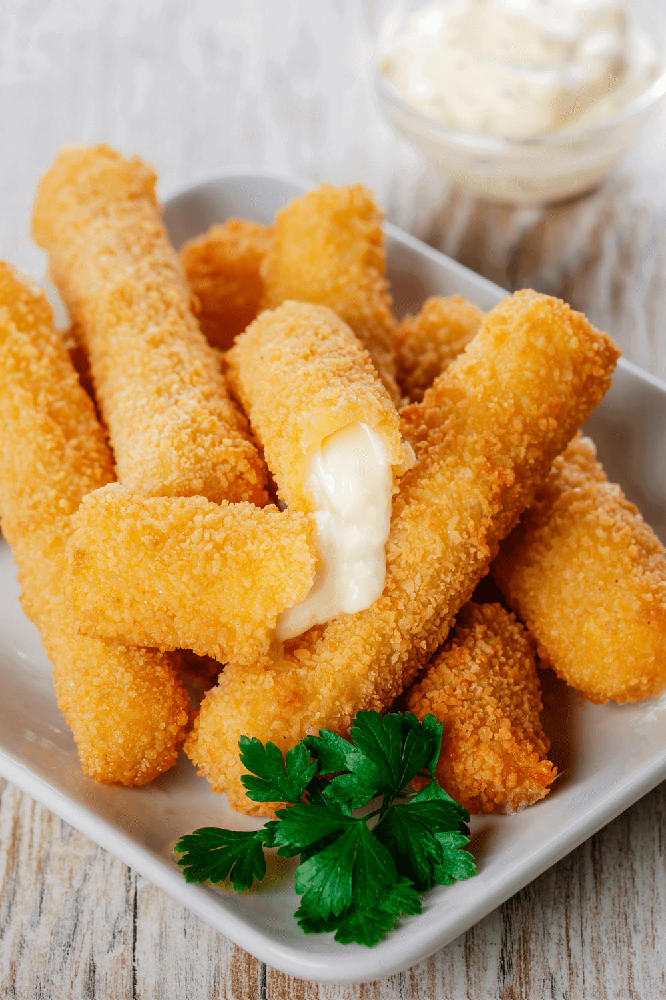

Mozzarella Sticks
Back to the kitchen

Description
Delicious, crispy, and cheesey. Mozzarella cheese sticks are a perfect way to start this full course meal.
Here we will show you exactly how to make them from scratch.
Ingredients
- 3/4 cup all purpose flower
- 2 tsp sea salt
- 1/2 tsp black pepper
- 1 tsp garlic powder
- 2 eggs
- 2 cups panko (breadcrumbs)
- 2 tsp Itallian seasoning
- 12 oz mozzarella cheese (cut into pieces)
Steps
- Line a rimmed baking sheet with parchment paper, set aside.
- In a small shallow bowl mix the flour with salt, pepper and garlic powder.
- In a second bowl add eggs along with 1 tablespoon of water and beat until smooth.
- In a third bowl mix together the panko and the Italian seasoning.
- Working with one piece of cheese at a time, dip the cheese into the egg mixture, followed by the flour mixture, back into the egg mixture and finally into the panko, gently pressing the panko to ensure it sticks. Set the cheese sticks on the prepared baking sheet and repeat with remaining cheese. Place the baking sheet in the freezer and freeze the cheese sticks for 45 minutes.
- In a large pot, set over medium high heat, bring the oil to 350°F, using a deep fat thermometer. Remove the cheese sticks from the freezer. Working in small batches gently drop them into the hot oil. Cook until golden brown on all sides, about 2 minutes. Remove from oil and place on a metal cooling rack set over a baking sheet. Repeat with remaining cheese sticks.
- Serve mozzarella sticks immediately with marinara sauce.
Serving size is 4 pieces